Válečný | Drama | Historický
| Počet sérií: | 1 |
| Počet dílů: | 10 |
| Délka dílů: | 49–70 min |
| Oblíbená postava: | Denver "Bull" Randleman |
| Oblíbený díl: | Day of Days |


94%
94%
9. nejlepší seriál 16. nejoblíbenější seriál

9,4/10

95/100

Drama | Komedie | Horor | Sci-Fi | Thriller
| Počet sérií: | 5 |
| Počet dílů: | 22 |
| Délka dílů: | 41–90 min |
| Oblíbená postava: | Cooper Redfield |
| Oblíbený díl: | Playtest |
Můj komentář:
Na seriál Black Mirror jsem začal koukat po tom, co jsem viděl pár dílů ve škole. Už po prvním díle mě okouzlil a nemohl jsem přestat koukat. V každým díle se rozebere nějaký problém moderních technologií, které by mohly existovat v budoucnosti a ukáže hlavně jejich temné stránky. Seriál je místami velmi napínavý a záhadný a každý příběh donutí člověka se zamyslet. Je velmi pěkně natočený a má skvělou atmosféru, rozhodně je to jeden z nejlepších seriálů, co jsem zatím viděl.


97%
88%
92. nejlepší seriál 65. nejoblíbenější seriál
8,8/10
95/100

Krimi | Drama | Thriller
| Počet sérií: | 1 |
| Počet dílů: | 6 |
| Délka dílů: | 57–60 min |
| Oblíbená postava: | David Budd |
| Oblíbený díl: | Episode 2 |
Můj komentář:
Na serál Bodyguard jsem narazil náhodou, když jsem si prohlížel videa na YouTubu, kde jsem viděl kousek z jedné akční scény, která je v něm je. Jakmile jsem měl čas, začal jsem ho sledovat a jeho ztrhující děj mě okamžitě uchvátil. Nejvíce jsem si oblíbil hlavní postavu Davida Budda, který se musí potýkat s terorismem a zkorumpovanou vládou. Je skvěle natočený a má dobrý příběh.


96%
83%
8,1/10
96/100
Fantasy | Horor | Mysteriózní
| Počet sérií: | 1 |
| Počet dílů: | 8 |
| Délka dílů: | 50-67 min |
| Oblíbená postava: | Vignette Stonemoss |
| Oblíbený díl: | Kingdoms of the Moon |
Můj komentář:
Na seriál Carnival Row jsem začal poté, co jsem viděl jeho trailer na YouTube v jedné kompilaci s novými seriály, ten mě celkem zaujal a poté co vyšel, jsem ho hned začal sledovat. Serál krásně ukazuje magický svět plný mýtických bytostí, který se snaží žít ve světě lidí, kteří je však nechtějí přijmout. Seriál je skvěle natočený a ukazuje pravou tvář rasismu a navíc v něm hraje moje oblíbená herečka.


90%
72%
7.9/10
84/100

Mysteriózní | Drama | Sci-Fi
| Počet sérií: | 2 |
| Počet dílů: | 18 |
| Délka dílů: | 45-61 min |
| Oblíbená postava: | Jonas Kahnwald |
| Oblíbený díl: | Endings and Beginnings |
Můj komentář:
Na seriál Dark jsem narazil úplně náhodou, když jsem si prohlížel seriály na Netflixu. Už jeho popisek mě dost zaujal a proto jsem ho začal okamžitě sledovat. Jeho děj mě okamžitě okouzlil a donutil mě přemýšlet. Seriál vás občas na tolik zmate, že si uvědomíte, co děje až v dalších epiodách, ale to kvůly tomu, že se seriál odehrává ve více časových směrech. které se do sebe čím dál vice zamotávají. Je velmi dobře natočený a má skvělou hudbu, která podtrhuje jeho záhadnou atmosféru.


96%
84%
281. nejlepší seriál 228. nejoblíbenější seriál
8,7/10
95/100
Drama | Mysteriózní
| Počet sérií: | 6 |
| Počet dílů: | 176 |
| Délka dílů: | 42-90 min |
| Oblíbená postava: | Dr. Gregory House |
| Oblíbený díl: | House vs. God |
Můj komentář:
Na seriál Dr. House jsem začal koukat poté, co jsem viděl pár epizod v televizi. Seriál mě zaujal hlavně svým důvtipem a intelignecí hlavní postavy Dr. House, kterého jsem si hned oblíbil. Děj je velmi zajímavý a zábavný a hlavní postava je úplně perfektně zpracovaná.


 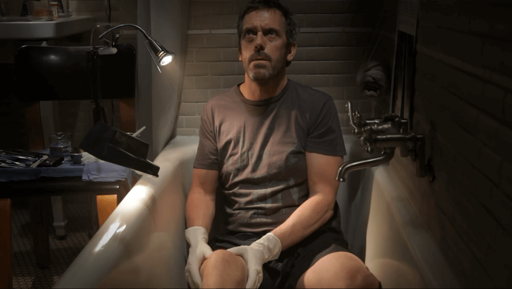
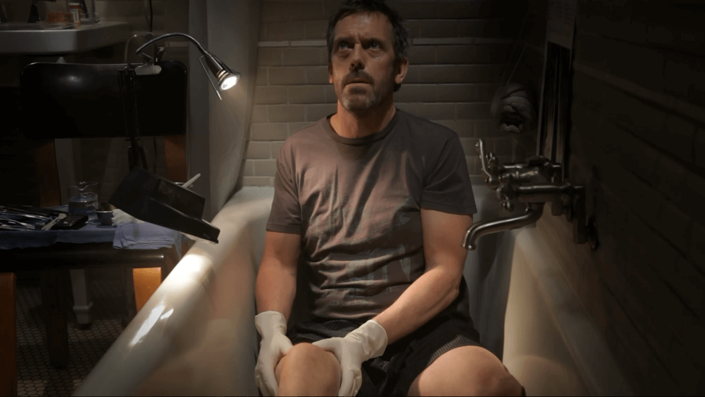
94%
87%
102. nejlepší seriál 8. nejoblíbenější seriál
8,7/10
95/100

Fantasy | Drama | Dobrodružný
| Počet sérií: | 8 |
| Počet dílů: | 73 |
| Délka dílů: | 48-82 min |
| Oblíbená postava: | Tormund Giantsbane |
| Oblíbený díl: | The Long Night |
Můj komentář:
Na seriál Game of Thrones jsem začal koukat kvůli tomu, že o něm všichni mluvili. Sice chvíli trvá, než se rozjede jeho děj, ale to co příjde po první "nudnější" sérii, je prostě úžasné. Seriál vás určitě okouzlí svými postavami, bitvami, draky a příběhovými zvraty, které vám nedopřejí klidu. Bohužel se jim moc nepodařila finální série, která je podle mě moc urychlená a ničí ty nejočekávanější události, které vrcholí v průběhu děje celého seriálu.


 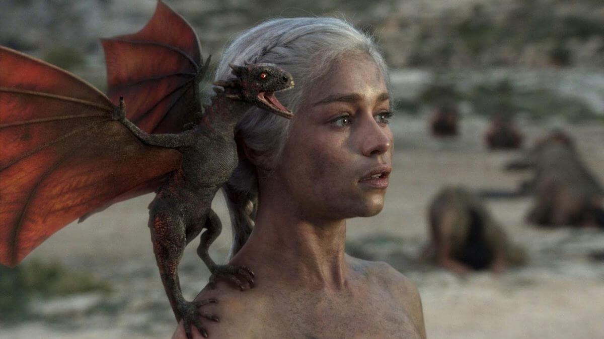
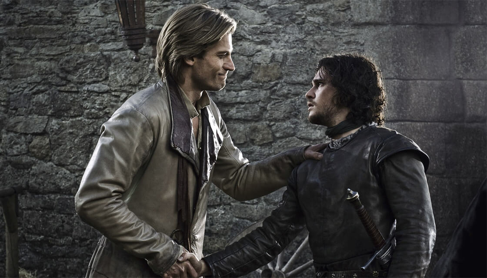
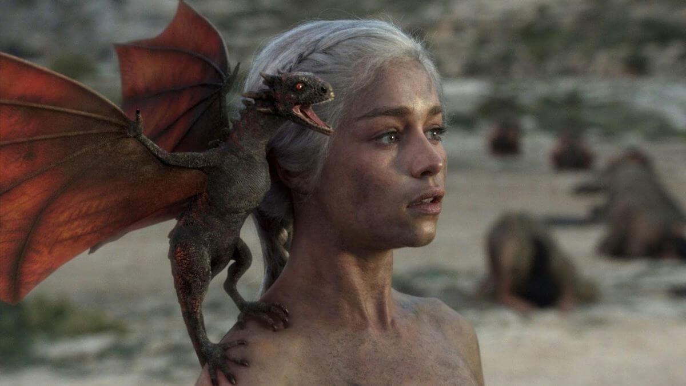
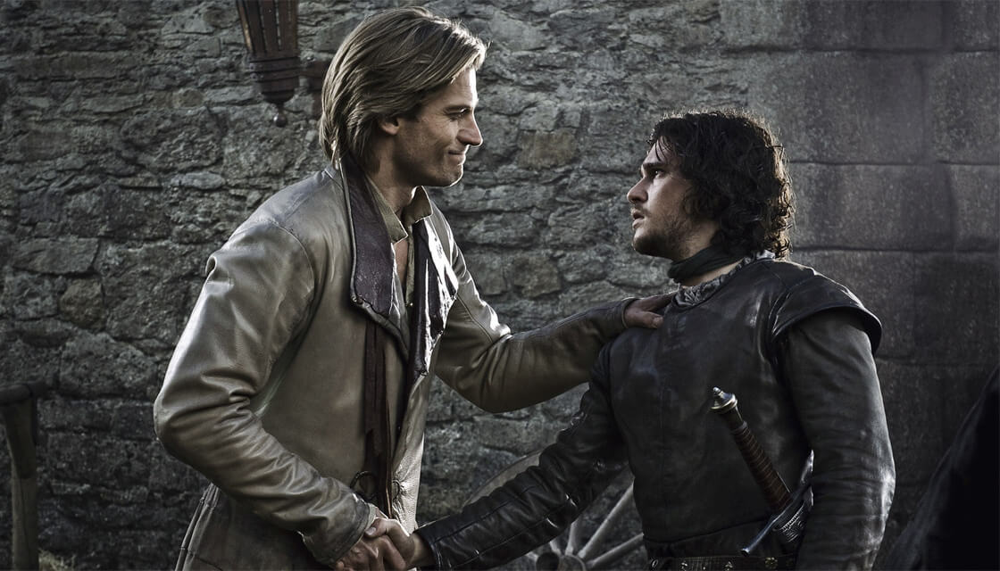

94%
91%
26. nejlepší seriál 4. nejoblíbenější seriál
9,3/10
95/100
Dobrodružný | Fantasy
| Počet sérií: | 1 |
| Počet dílů: | 8 |
| Délka dílů: | 57-60 min |
| Oblíbená postava: | Iorek Byrnison |
| Oblíbený díl: | Armour |
Můj komentář:
Na seriál His Dark Materials jsem narazil úplně náhodou, když jsem koukal na trailery k novým seriálům. Vychází z knižní předlohy, podle který byl také natočený film Zlatý kompas. Jelikož se mi tento film celkem líbil, tešil jsem, až ho budu moct porovnat se seriálem. Ten byl skvěle natočený a oproti filmu mnohem lépe rozvedenější a lépe vyjádřil hlavní postavy, škoda jen, že ho dost urychlili a neudělali ho propracovanější.


92%
75%
7,9/10
92/100
Drama | Historický
| Počet sérií: | 1 |
| Počet dílů: | 5 |
| Délka dílů: | 59-65 min |
| Oblíbená postava: | Valery Legasov |
| Oblíbený díl: | 1:23:45 |
Můj komentář:
Na seriál Chernobyl jsem začal koukat, protože o něm všichni mluvili. Seriál je sice dobře natočený a odhaluje nám pravdu o jaderné havárii v Chernobylu, ale mě moc nezaujal. Jeho děj mi přišel po chvíli celkem pomalý, ale to vyplívá z toho, že vycházi z historických faktů a snaží se být co nejpřesnější.
 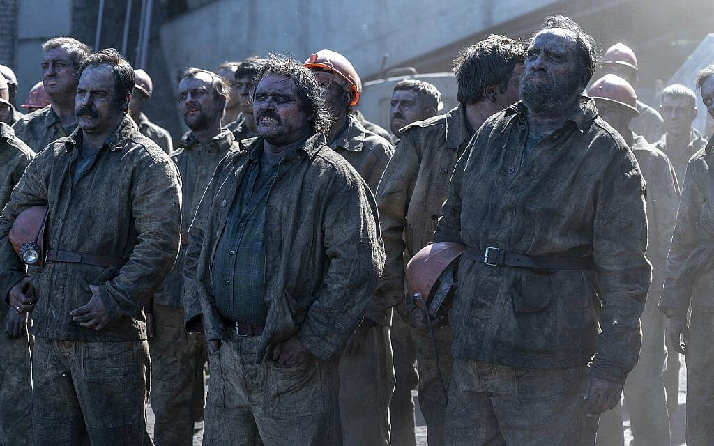
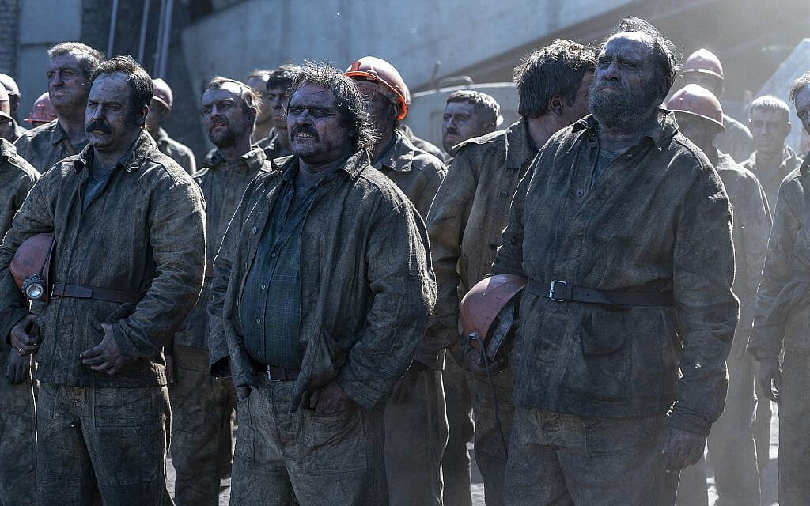

91%
96%
2. nejlepší seriál 60. nejoblíbenější seriál
9,4/10
98/100
Fantasy | Horor | Thriller
| Počet sérií: | 3 |
| Počet dílů: | 28 |
| Délka dílů: | 50-64 min |
| Oblíbená postava: | Sabrina Spellman |
| Oblíbený díl: | Chapter Twenty-Eight: Sabrina Is Legend |
Můj komentář:
Na seriál Chilling Adventures of Sabrina jsem začal koukat potom, co jsem viděl na Netflixu jeho trailer. Jeho děj se točí kolem mladé čarodějky Sabriny, která je na půl smrtelnice a na půl čarodejka. Ta se musí potýkat se samotným ďáblem a čarodějným životem, který ohrozuje i její smrtelné přátele. Seriál je úžasně natočený a do hlavní postavy jsem se okamžitě zamiloval. Rozhodně je to zatím, asi můj nejoblíbenější seriál, protože jsem si každou epizodu náramně užil.

98%
75%
7,6/10
92/100

Akční | Sci-Fi
| Počet sérií: | 2 |
| Počet dílů: | 20 |
| Délka dílů: | 44-52 min |
| Oblíbená postava: | Henrietta "Henry" Coles |
| Oblíbený díl: | New Beginnings |
Můj komentář:
Na seriál Impulse jsem začal koukat po tom, co mi ho doporučilo YouTube. Seriál je velmi pěkně natočený a jeho ztrhující děj vám rozprodí krev. Podle mě má ideální tempo, které není ani rychlé a ani pomalé. Pro někoho může být toto tempo až příliš pomalé, ale pro mě bylo ideální. Už od začátku jsem si zamiloval hlavní postavu a pointu celého seriálu, teleportaci, která je skvěle zpracovaná a natočená.

94%
70%
7,5/10
90/100
Komedie | Drama
| Počet sérií: | 2 |
| Počet dílů: | 26 |
| Délka dílů: | 30–43 min |
| Oblíbená postava: | Murphy Mason |
| Oblíbený díl: | Bait and Switch |
Můj komentář:
Na seriál In The Dark jsem narazil náhodou, když jsem si prohlížel nové epizody seriálů na, teď již mrtvé stránce, topseriály. Po zhlédnutí traileru mě seriál zaujal a začal jsem ho sledovat. Příběh slepé Murphy, která se snaží objasnit, i přes své postížení, vraždu svého nejlepšího přítele, je velmi dobře, vtipně a originálně zpracovaný a rozhodně jsem si ho užil.
89%
65%
7,3/10
63/100
Komedie | Krimi | Drama | Horor | Sci-Fi
| Počet sérií: | 5 |
| Počet dílů: | 71 |
| Délka dílů: | 41-43 min |
| Oblíbená postava: | Olivia „Liv“ Moore |
| Oblíbený díl: | Dead Rat, Live Rat, Brown Rat, White Rat |
Můj komentář:
Na seriál iZombie jsem začal koukat kvůli náhodě, když jsem si otevřel topseriály a zaujal mě jeho náhledový obrazek. Po přečtení popisu jsem dostal okamžitě chuť si ho zhlédnout. Tato komedie, která se točí kolem zombíků, je prostě skvělá. Oproti dalším zombie filmům a seriálům je velmi originální a pracuje na úplně jiným principu. Do hlavni postavy jsem se okamžitě zamiloval, stejně tak do ostatních postav a hlavně do toho skvělého konceptu, kterým tento seriál disponuje.
92%
74%
7,9/10
91/100
Akční | Krimi | Thriller | Mysteriózní
| Počet sérií: | 4 |
| Počet dílů: | 38 |
| Délka dílů: | 41–60 min |
| Oblíbená postava: | The Professor |
| Oblíbený díl: | Bella ciao |
Můj komentář:
Seriál Le Casa de Papel ,alias Money Heist, jsem začal sledovat poté ,co jsem na něj narazil na Netflixu. Je to jeden z nejoriginálnějších seriálů a vůbec se nedivím, že patří k nejsledovanějším seriálům na Netflixu. Seriál ukazuje skupinu lupičů, kteří se vloupají do kálovské minocvny a začnou si tisknout svoje peníze. Aby jim jejich perfektní plán vyšel, musí se na několik dnů v mincovně obrnit a čelit všem komplikacím. Je velmi pěkně natočený a má hodně originální koncept.
98%
89%
56. nejlepší seriál 194. nejoblíbenější seriál
8,4/10
96/100
Animovaný | Komedie | Fantasy | Horor | Sci-Fi
| Počet sérií: | 1 |
| Počet dílů: | 18 |
| Délka dílů: | 6-17 min |
| Oblíbená postava: | Sonnie |
| Oblíbený díl: | Sonnie's Edge |
Můj komentář:
Na seriál Love, Death & Robots jsem se rozhodl podívat poté, co jsem viděl trailer. Seriál se skládá z několika krátkých animovaných příběhů, které jsou originální a velmi dobře udělané. Název tohoto seriálu mluví sám za sebe, je velmi brutální a s ničím se nepáře. Rozhodně patří k nejvíc cool seriálům, co jsem zatím viděl.
94%
81%
8,6/10
93/100
Akční | Krimi | Mysteriózní
| Počet sérií: | 3 |
| Počet dílů: | 39 |
| Délka dílů: | 46-61 min |
| Oblíbená postava: | Franklin „Foggy“ Nelson |
| Oblíbený díl: | A Cold Day in Hell's Kitchen |
Můj komentář:
Na seriál Daredevil jsem začal koukat po tom, co ho zmínili v seriálu The Punisher a navíc mi ho doporučil kamarád. Má skvělý děj a vyborně zpracované chrakatery. Příběh se toči kolem slepého pravníka, který má speciální schopnosti, se kterými brání svoje milované město před násilníky a zloduchy. Akční scény v tomto seriálu jsou skvěle natočené a napinavé.

96%
87%
120. nejlepší seriál 93. nejoblíbenější seriál
8,6/10
95/100
Akční | Sci-Fi
| Počet sérií: | 2 |
| Počet dílů: | 23 |
| Délka dílů: | 49–62 min |
| Oblíbená postava: | Danny Rand / Iron Fist |
| Oblíbený díl: | A Duel of Iron |
Můj komentář:
Na seriál Iron Fist jsem začal koukat po zhlédnutí Luka Cage, kde se objevil v jedné epizodě. Seriál má originální koncept a schopnosti hlavního hrdiny jsem si hned oblíbil, a to hlavně díky skvělým bojovým scénám. Z Marvel seriálů je Iron Fist podle mě třetí nejlepší, hned za Punisherem a The Defenders.

96%
67%
6,5/10
83/100
Akční | Krimi | Drama | Sci-Fi | Thriller
| Počet sérií: | 3 |
| Počet dílů: | 39 |
| Délka dílů: | 44-56 min |
| Oblíbená postava: | Jessica Jones |
| Oblíbený díl: | AKA Smile |
Můj komentář:
Na seriál Jessica Jones jsem začal koukat poté, co ho zmínili v seriálu Daredevil. Seriál je velmi originální a oproti ostatním superhrdinským seriálům je dost odlišný. Celý seriál se nese v detektivním duchu a točí se kolem soukromého očka Jessici Jones, která má speciální schopnosti, se kterými bojuje proti zločincům. Je velmi pěkně natočený a jeho zpracování se mi hopně líbilo.
95%
77%
8,0/10
89/100
Akční | Sci-Fi
| Počet sérií: | 2 |
| Počet dílů: | 26 |
| Délka dílů: | 46-69 min |
| Oblíbená postava: | Luke Cage |
| Oblíbený díl: | Who's Gonna Take the Weight? |
Můj komentář:
Na seriál Luke Cage jsem začal sledovat, protože jeho hlavní postava vystupovala taktéž v Jessice Jones. Jelikož mě Jessica Jones bavila, tak jsem potřeboval vedět co stalo s Lukem. Ten se mezitím zabydlel v Harlemu, kde ho donutili ukázat všem svoje speciální schopnosti. Koncept obrovského, neprůstřelného černocha, který má super sílu má něco do sebe. Seriál je dobře natočený a jeho zasazení v černošské čtvrti je skvělé, včetně hudby, která se mi hodně líbí.
93%
69%
7,3/10
74/100
Akční | Dobrodružný | Sci-Fi
| Počet sérií: | 1 |
| Počet dílů: | 8 |
| Délka dílů: | 45–57 min |
| Oblíbená postava: | Matthew „Matt“ Murdock / Daredevil |
| Oblíbený díl: | Worst Behavior |
Můj komentář:
Seriál The Defenders spojuje všechny Marvel seriály, a proto jsem ho zhlédnul jako poslední v mém maratonu. V seriálu se objevují všechny postavy z předchozích seriálů a je skvěle natočený. Má úžastně natočené bojové scény a způsob jak spojuje všechny postavy a příběhy je prostě dokonalý. Seriál mám rád hlavně kvůli tomu, že jsem mohl opět vidět všechny své oblíbené postavy znovu v akci.
 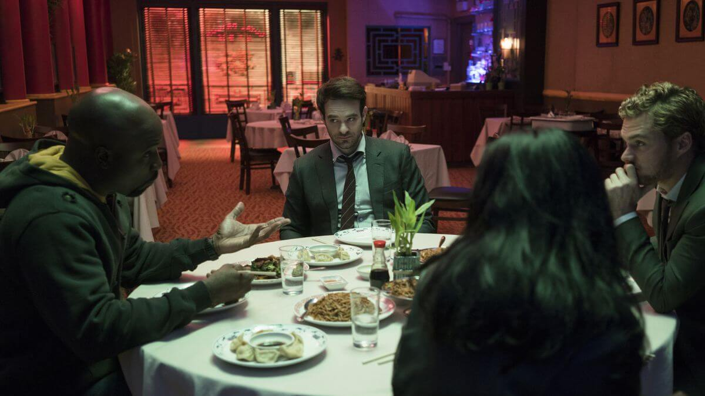
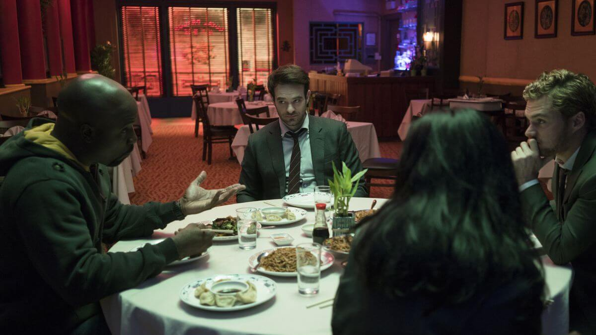
96%
73%
7,3/10
84/100
Akční | Dobrodružný | Krimi | Sci-Fi | Thriller
| Počet sérií: | 2 |
| Počet dílů: | 26 |
| Délka dílů: | 47-58 min |
| Oblíbená postava: | Frank Castle / Punisher |
| Oblíbený díl: | Virtue of the Vicious |
Můj komentář:
Na seriál The Punisher jsem začal koukat ze zvědavosti, protože jsem myslel, že bude brutální a plný akce. A měl jsem pravdu, seriál se s ničím nepáře a hlavní postava Frank je velmi pěkně udělaná a herec ji ztvárnil dokonale. V seriálu jsem zjistil, že je propojený s dalšími Marvel seriály. The Punisher je podle mě z nich nejlepší a má nejlépe zpracovované bojové scény, protože hlavní postava nedisponuje žadnými speciálními schopnosti, pouze nejlepším vojenským výcvikem a talentem k zabijení.
97%
88%
85. nejlepší seriál 169. nejoblíbenější seriál
8,5/10
95/100
Thriller | Drama | Akční | Krimi
| Počet sérií: | 5 |
| Počet dílů: | 90 |
| Délka dílů: | 42-55 min |
| Oblíbená postava: | Michael Scofield |
| Oblíbený díl: | Go |
Můj komentář:
Na seriál Prison Break jsem narazil náhodou, když jsem neměl na co koukat. Seriál je sice celkem starý, ale i přesto je skvěle natočený a má hodně dobře zpracováný svůj koncept. V seriálu jsem si oblíbil hlavně postavu Michaela Scofielda, který se snaží osvobodit svého bratra z vězeni, kde má být popraven na elektryckým křesle za zločin, který nespáchal.

93%
80%
21. nejoblíbenější seriál
8,3/10
91/100

Animovaný | Dobrodružný | Komedie | Sci-Fi
| Počet sérií: | 4 |
| Počet dílů: | 41 |
| Délka dílů: | 21–23 min |
| Oblíbená postava: | Rick Sanchez |
| Oblíbený díl: | Pickle Rick |
Můj komentář:
Na seriál Rick and Morty jsem začal koukat po doporučení mým kamarádem. Bohužel nejsem velký fanda animovaných seriálů a nekorektního humoru, který je jeho základem. I přesto jsem si seriál celkem užil a místami jsem se i zasmál. Myslím si, že tento seriál spoustu lidí natchne a určitě ho tím pádem doporučuji všem zhlédnout a udělat si svůj vlastní názor.

92%
91%
20. nejlepší seriál 59. nejoblíbenější seriál
9,2/10
95/100
Akční | Drama | Válečný
| Počet sérií: | 3 |
| Počet dílů: | 63 |
| Délka dílů: | 40–84 min |
| Oblíbená postava: | Sonny Quinn |
| Oblíbený díl: | Containment |
Můj komentář:
Na seriál Seal Team jsem začal sledovat potom, co mi ho ukázal můj kamarád. Seriál popisuje životy vojáků ze speciálních jednotek Seals. Seriál je rozhodně skvěle natočený a má skvělý příběch, který je místami dost napínavý. Nejvíce se mi na něm líbí jeho profesionální a realistické zobrazení moderního boje z první osoby.

94%
76%
7,4/10
92/100
Krimi | Mysteriózní | Drama
| Počet sérií: | 4 |
| Počet dílů: | 12 |
| Délka dílů: | 88–90 min |
| Oblíbená postava: | Sherlock Holmes |
| Oblíbený díl: | A Scandal in Belgravia |
Můj komentář:
Na seriál Sherlock jsem začal koukat čistě ze zvědavosti, ale již po chvilce jsem zjistil, že je to jeden z nejgeniálnějších seriálů, co jsem viděl. Celý seriál se točí kolem geniálního detektiva Sherlocka Holmese, který reší řadu zvlaštních případů. Seriál je točen v delších epizodách, kdy každá z nich je perfektně natočená. Rozhodně musím ještě pochválit výběr herců, kteří se ke svým postavám dokonale hodí.

97%
91%
22. nejlepší seriál 13. nejoblíbenější seriál
9,1/10
95/100

Drama | Fantasy | Horor | Mysteriózní | Sci-Fi | Thriller
| Počet sérií: | 3 |
| Počet dílů: | 25 |
| Délka dílů: | 42-78 min |
| Oblíbená postava: | Dustin Henderson |
| Oblíbený díl: | Chapter Six: The Monster |
Můj komentář:
Na seriál Stranger Things jsem začal koukat poté, co mi ho hned několik kamarádů doporučilo. Seriál se mi líbí hlavně kvůli své hororové podstatě a originálnímu ději. Celý se odehrává v malém americkém městečku Hawkins v osmdesátých letech. Kde skupina kamarádů odhaluje tajemství tajné laboratoře, když hledají svého zmizelého přítele Willa. Seriál je hodně dobře natočený a má úžasnou atmosféru.
 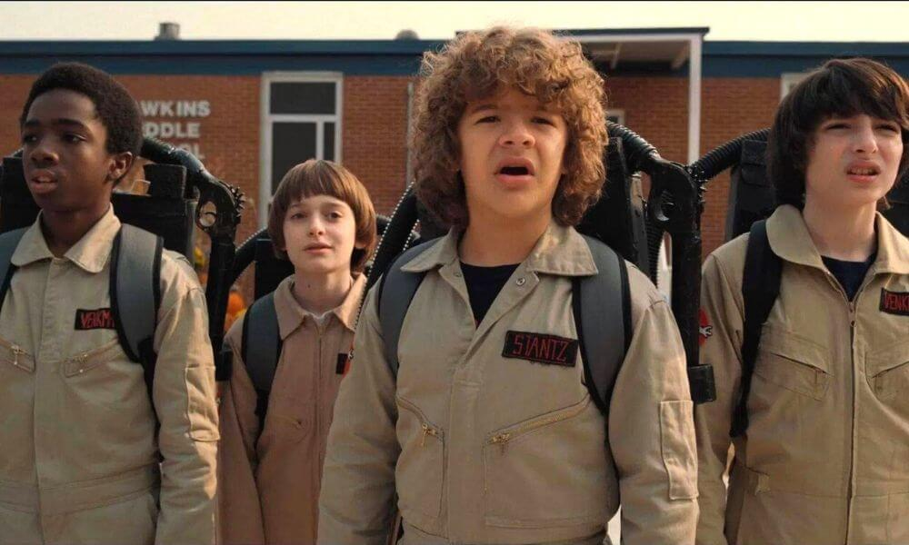
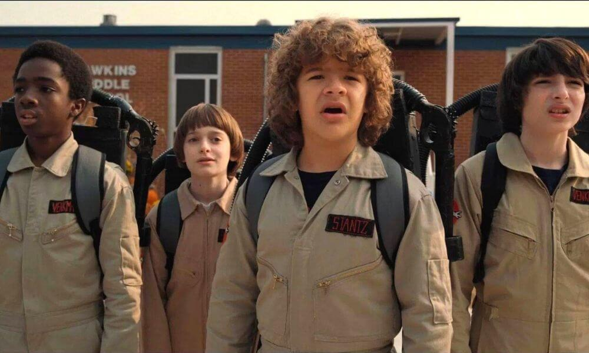

96%
91%
30. nejlepší seriál 28. nejoblíbenější seriál
8,8/10
95/100
Drama | Krimi | Thriller | Komedie | Dobrodružný | Romantický
| Počet sérií: | 2 |
| Počet dílů: | 16 |
| Délka dílů: | 18-25 min |
| Oblíbená postava: | Alyssa |
| Oblíbený díl: | Episode 3 |
Můj komentář:
Seriál The End of the F***ing World mě již delší dobu zajímal a když jsem si pořídil Netflix, tak jsem ho hned začal sledovat. Na seriálu se mi okamžitě zalíbili hlavní postavy, které jsou skvěle udělané. Celý seriál je doprovázen sprostým a suchým humorem, a tím se stává hodně originální a musím říct, že se mi hodně líbil.
95%
81%
224. nejoblíbenější seriál
8,1/10
93/100
Akční | Dobrodružný | Drama | Fantasy
| Počet sérií: | 1 |
| Počet dílů: | 8 |
| Délka dílů: | 47-67 min |
| Oblíbená postava: | Jaskier |
| Oblíbený díl: | Of Banquets, Bastards and Burials |
Můj komentář:
Seriál The Witcher byl velmi očekávaný a ani já jsem si ho nenachal ujít. Bohužel jsem nečetl knižní předlohu a ani nehrál hry, takže nevím jestli souhlasí s lorem s knížek. Rozhodně je ale skvěle natočený a i ztvárněný, hudba a atmosféra jsou úžasný a příběh mě okamžitě zaujal. Podle mě ho autoři skvěle vystihli a díky tomu jsem si koupil i všechny Witcher hry a mám chuť si přečíst knížky.
 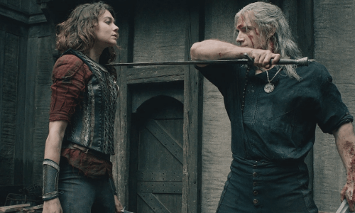
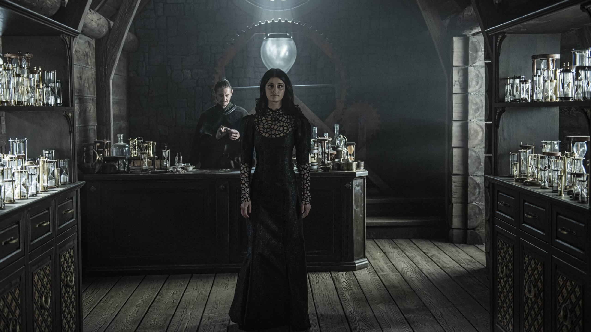
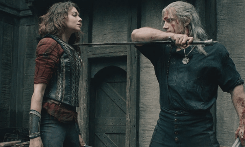
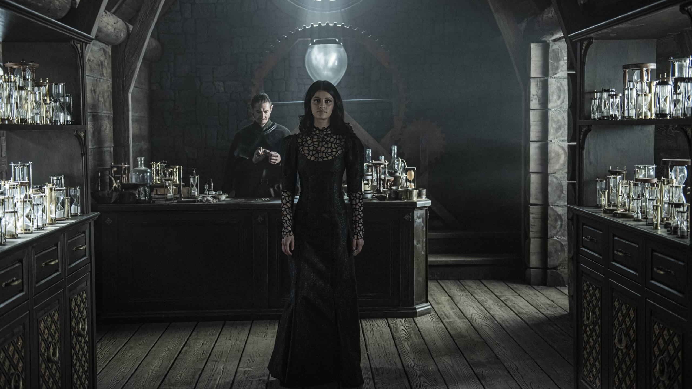

94%
79%
154. nejoblíbenější seriál
8,3/10
89/100
Akční | Dobrodružný | Drama | Fantasy
| Počet sérií: | 1 |
| Počet dílů: | 8 |
| Délka dílů: | 47-67 min |
| Oblíbená postava: | Jaskier |
| Oblíbený díl: | Of Banquets, Bastards and Burials |
Můj komentář:
Seriál The Witcher byl velmi očekávaný a ani já jsem si ho nenachal ujít. Bohužel jsem nečetl knižní předlohu a ani nehrál hry, takže nevím jestli souhlasí s lorem s knížek. Rozhodně je ale skvěle natočený a i ztvárněný, hudba a atmosféra jsou úžasný a příběh mě okamžitě zaujal. Podle mě ho autoři skvěle vystihli a díky tomu jsem si koupil i všechny Witcher hry a mám chuť si přečíst knížky.
94%
79%
154. nejoblíbenější seriál
8,3/10
89/100
Akční | Dobrodružný | Drama | Fantasy
| Počet sérií: | 1 |
| Počet dílů: | 8 |
| Délka dílů: | 47-67 min |
| Oblíbená postava: | Jaskier |
| Oblíbený díl: | Of Banquets, Bastards and Burials |
Můj komentář:
Seriál The Witcher byl velmi očekávaný a ani já jsem si ho nenachal ujít. Bohužel jsem nečetl knižní předlohu a ani nehrál hry, takže nevím jestli souhlasí s lorem s knížek. Rozhodně je ale skvěle natočený a i ztvárněný, hudba a atmosféra jsou úžasný a příběh mě okamžitě zaujal. Podle mě ho autoři skvěle vystihli a díky tomu jsem si koupil i všechny Witcher hry a mám chuť si přečíst knížky.
94%
79%
154. nejoblíbenější seriál
8,3/10
89/100
Akční | Dobrodružný | Drama | Fantasy
| Počet sérií: | 1 |
| Počet dílů: | 8 |
| Délka dílů: | 47-67 min |
| Oblíbená postava: | Jaskier |
| Oblíbený díl: | Of Banquets, Bastards and Burials |
Můj komentář:
Seriál The Witcher byl velmi očekávaný a ani já jsem si ho nenachal ujít. Bohužel jsem nečetl knižní předlohu a ani nehrál hry, takže nevím jestli souhlasí s lorem s knížek. Rozhodně je ale skvěle natočený a i ztvárněný, hudba a atmosféra jsou úžasný a příběh mě okamžitě zaujal. Podle mě ho autoři skvěle vystihli a díky tomu jsem si koupil i všechny Witcher hry a mám chuť si přečíst knížky.
94%
79%
154. nejoblíbenější seriál
8,3/10
89/100
Akční | Dobrodružný | Drama | Fantasy
| Počet sérií: | 1 |
| Počet dílů: | 8 |
| Délka dílů: | 47-67 min |
| Oblíbená postava: | Jaskier |
| Oblíbený díl: | Of Banquets, Bastards and Burials |
Můj komentář:
Seriál The Witcher byl velmi očekávaný a ani já jsem si ho nenachal ujít. Bohužel jsem nečetl knižní předlohu a ani nehrál hry, takže nevím jestli souhlasí s lorem s knížek. Rozhodně je ale skvěle natočený a i ztvárněný, hudba a atmosféra jsou úžasný a příběh mě okamžitě zaujal. Podle mě ho autoři skvěle vystihli a díky tomu jsem si koupil i všechny Witcher hry a mám chuť si přečíst knížky.
94%
79%
154. nejoblíbenější seriál
8,3/10
89/100
Můj komentář:
Na seriál Band of Brothers jsem se koukal, kvůli jeho vysokému hodnocení. A po jeho zhlédnutí musím říct, že si takové hodnocení opravdu zaslouží. Myslím si, že skvěle vystihuje atmosféru Druhé světové války a ukazuje, co zažili výsadkáři 101. výsadkové divize. Seriál je podle skutečných událostí a vychází z vyprávění veteránů. Je velmi dobře natočený a skvěle zpracovaný.